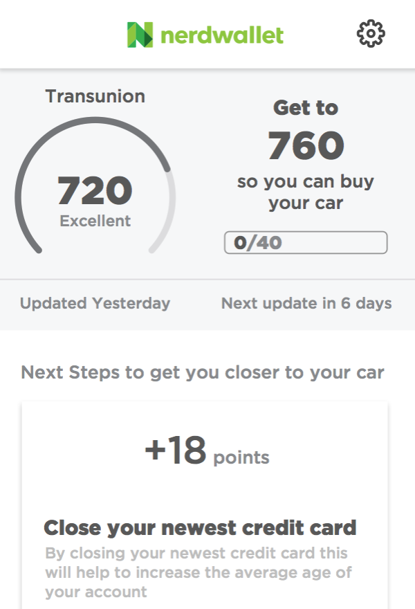
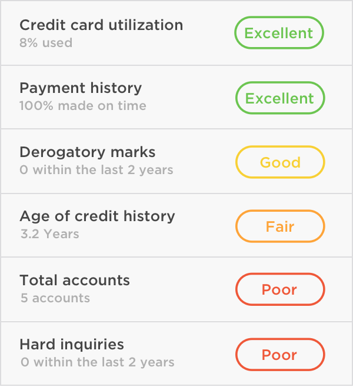

Nerdwallet started as the best way to find a new credit card, and moved into helping people answer life's financial questions. A big problem with relying on people asking questions is they have to know they have a question in the first place. A lot of people don't even know where to start asking questions with their financial life.
We wanted to make a product that would have a lasting relationship with our users. After pitching a product to help users with this problem, a Product Manager and I got to kick it off with a small team.

As of this year, Facebook is confidently on its way to becoming the most widely used product in history. People spend more and more time on the platform, and in certain countries it is indistinguishable from “the Internet.” However, we have noticed people are reluctant to share their everyday moments on Facebook.
If users could not find an answer to their question quickly we prominently displayed calls to action to our chat support when it was available. If not using the self serve articles chat is the best experience for the user because they get their question answered within minutes and receive a personalize experience.

As of this year, Facebook is confidently on its way to becoming the most widely used product in history. People spend more and more time on the platform, and in certain countries it is indistinguishable from “the Internet.” However, we have noticed people are reluctant to share their everyday moments on Facebook.


{kind=link}
{kind=link}